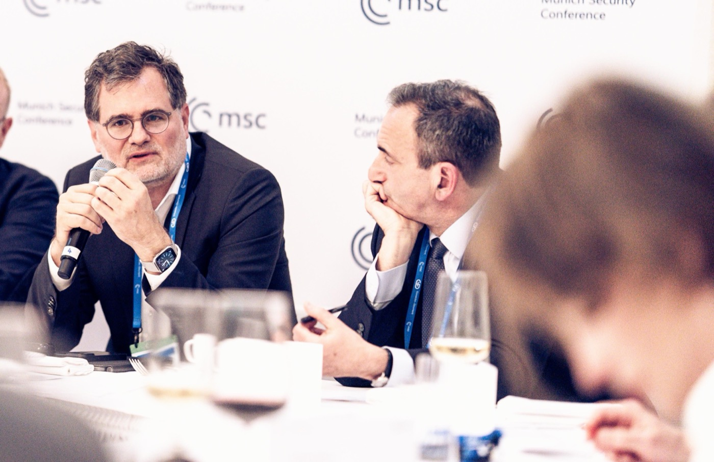

Sobre Wolfgang Schmidt
Wolfgang Schmidt nació en Hamburgo en 1970 y reside en Berlín. Trabaja como asesor y conferenciante en asuntos europeos y transatlánticos, política económica, financiera y de seguridad, así como en procesos de toma de decisiones estratégicas en el ámbito político y de la administración pública. Aporta más de dos décadas de experiencia política a nivel federal y regional en Alemania, en Europa y en el ámbito internacional, trabajando estrechamente con gobiernos, parlamentos, organizaciones internacionales, empresas e instituciones académicas.
Conoce Estados Unidos por su colaboración con cuatro administraciones estadounidenses, y su vinculación con las instituciones europeas se remonta a su etapa como miembro del bureau de la organización juvenil del Partido Socialista Europeo (PSE). Un eje central de su trabajo son los desafíos estratégicos de Europa frente a Estados Unidos, China y otros actores globales, y la pregunta de cómo interactúan la fortaleza económica, la soberanía tecnológica y la capacidad de acción en materia de seguridad.

De diciembre de 2021 al 6 de mayo de 2025, Wolfgang Schmidt ejerció como ministro federal para Asuntos Especiales y jefe de la Cancillería Federal, así como Coordinador de los Servicios de Inteligencia del Estado, en el gabinete del canciller Olaf Scholz. En este cargo —el centro neurálgico de la coordinación del gobierno alemán— gestionó el trabajo cotidiano del ejecutivo, mantuvo las relaciones con el Bundestag y con los dieciséis estados federados, e intervino en todas las decisiones políticas de calado. Como coordinador clave de la coalición tripartita del SPD, los Verdes y el FDP, mantuvo la cohesión entre los socios de gobierno, coordinó los consejos de ministros semanales y asesoró al canciller Scholz en todas las cuestiones estratégicamente relevantes.
Su mandato estuvo marcado por el apoyo alemán a Ucrania tras la invasión rusa, y por los cambios de fondo del Zeitenwende —el punto de inflexión histórico en la política exterior y de seguridad alemana proclamado por el canciller Scholz en febrero de 2022—, que incluyó un aumento sustancial del gasto en defensa, una salida acelerada de la dependencia energética de Rusia y una reorientación de la política industrial. Como Coordinador de los Servicios de Inteligencia, supervisó la seguridad nacional e internacional, la prospectiva estratégica y la cooperación con socios en Europa, el espacio transatlántico y Oriente Próximo.
De 2018 a 2021, Wolfgang Schmidt ejerció como secretario de Estado en el Ministerio Federal de Finanzas en el último gabinete de la canciller Angela Merkel, responsable de las cuestiones de fondo en política económica y fiscal, de la coordinación de los ministerios dirigidos por el SPD y de la interlocución con la Cancillería. Este período abarcó la respuesta económica alemana a la pandemia de Covid-19: coordinó con los dieciséis estados las medidas de protección y contribuyó al diseño de programas de ayuda para los sectores más afectados —entre ellos la cultura y la hostelería—. En el plano internacional, participó en la Iniciativa de Suspensión del Servicio de la Deuda (DSSI) del G20 y el Marco Común.
Representó a Alemania como delegado en el G7 y el G20 y como gobernador suplente en el Banco Mundial y el Banco Asiático de Inversión en Infraestructura (AIIB), y fue miembro de los consejos de supervisión de las agencias de desarrollo GIZ y DEG.
De 2011 a 2018, Wolfgang Schmidt ejerció como consejero de Estado y plenipotenciario de la Ciudad Libre y Hanseática de Hamburgo ante el Gobierno Federal, la UE y para Asuntos Exteriores — el representante efectivo de Hamburgo en Berlín y Bruselas—. Coordinó la participación hamburgesa en el Bundesrat (la cámara alta alemana a través de la cual los dieciséis estados participan en la legislación federal), representó los intereses de Hamburgo ante los ministerios federales y dirigió la Representación del Estado en Berlín y la Oficina Hansa en Bruselas. Como informal «ministro de Exteriores» de su ciudad natal, atrajo a personalidades internacionales de alto nivel, coordinó los fondos estructurales europeos y desarrolló la cooperación nórdica en el marco STRING. Presidió la Conferencia de Ministros de Asuntos Europeos (EMK) en 2014/15 y organizó la cumbre del G20 en Hamburgo en 2017.

La trayectoria política de Wolfgang Schmidt está estrechamente ligada a la de Olaf Scholz. Cuando Scholz asumió la Secretaría General del SPD en otoño de 2002, fue él quien llamó a Schmidt a Berlín. Trabajaron juntos durante más de veinte años: en la sede central del SPD, en el grupo parlamentario en el Bundestag, en el Ministerio Federal de Trabajo, en Hamburgo, en el Ministerio Federal de Finanzas y, finalmente, en la Cancillería Federal. Durante todo ese tiempo, Schmidt fue figura clave en el diseño de la estrategia política y la dirección de las campañas electorales.
Wolfgang Schmidt es jurista con plena habilitación. Estudió Derecho en la Universidad de Hamburgo y en la Universidad de Deusto en Bilbao. Tras el Primer Examen de Estado trabajó como colaborador de investigación en la cátedra del Prof. Dr. Peter Behrens en la Universidad de Hamburgo, especializada en Derecho europeo, internacional y de la competencia. Tras el Segundo Examen de Estado en noviembre de 2002 ocupó cargos directivos en la sede del SPD, el grupo parlamentario y el Ministerio Federal de Trabajo, fue director de la oficina de la OIT en Berlín y de 2004 a 2008 director gerente honorario de la Fundación Willy Brandt Noruego-Alemana.

Wolfgang Schmidt cuenta con una larga trayectoria en los debates sobre política exterior, de seguridad y defensa. En 2010 completó el curso semestral de la Academia Federal de Política de Seguridad (BAKS) y desde 2003 es miembro de los Globalen Atlantiker, una red apartidista de políticos, asesores y académicos alemanes y estadounidenses de la Fundación Friedrich Ebert. Participa regularmente en conferencias internacionales sobre política de seguridad europea, relaciones transatlánticas, política exterior alemana y política económica.
Hasta septiembre de 2025 fue miembro del Patronato de la Conferencia de Seguridad de Múnich (MSC) y presidente de su Board of Trustees. Hasta finales de 2025 fue vicepresidente del Consejo de la Fundación de la SWP — el principal centro de estudios alemán sobre política exterior y de seguridad—. Es miembro del Willy-Brandt-Kreis e.V., del Consejo del ECFR y del patronato de los Coloquios Empresariales de Baden-Baden (BBUG).
Wolfgang Schmidt se implicó en política desde muy joven —como delegado estudiantil y en el periodismo juvenil (periódico escolar, Prensa Juvenil Democrática de Hamburgo)—. Desde 1989 es miembro del SPD. Fue vicepresidente de la IUSY, entonces presidida por Antonio Guterres, y miembro del bureau de la ECOSY (hoy Young European Socialists). Este activismo internacional forjó su compromiso de por vida con la integración europea y la cooperación transatlántica.


En las elecciones federales del 23 de febrero de 2025, Wolfgang Schmidt se presentó como candidato directo del SPD en la circunscripción de Hamburgo-Eimsbüttel y como cabeza de lista de su partido en Hamburgo. En un momento en que hay mucho en juego, quiso volcarse con todas sus fuerzas en defender las políticas correctas y conquistar un escaño propio. Con casi 43.000 votos de candidatura, quedó segundo en la circunscripción — y también estuvo muy cerca de entrar en el Bundestag por los votos de partido.

Wolfgang Schmidt vive en Berlín y es padre de dos hijas adultas. Además de alemán, habla inglés y español con fluidez. Hamburgués de pura cepa, tiene abono de temporada en el FC St. Pauli —el club conocido tanto por su identidad política y la cultura de su afición como por su fútbol— y acude a los partidos siempre que puede. Practica el running con mayor o menor regularidad, juega al fútbol en un equipo de amateurs y navega a vela. Le apasiona la música en directo y disfruta de los conciertos.